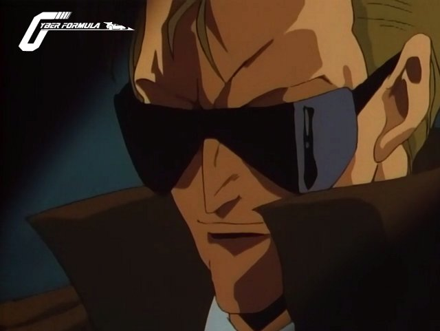
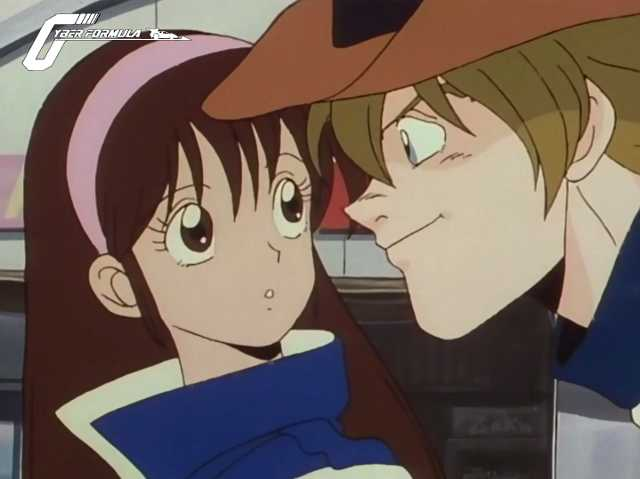
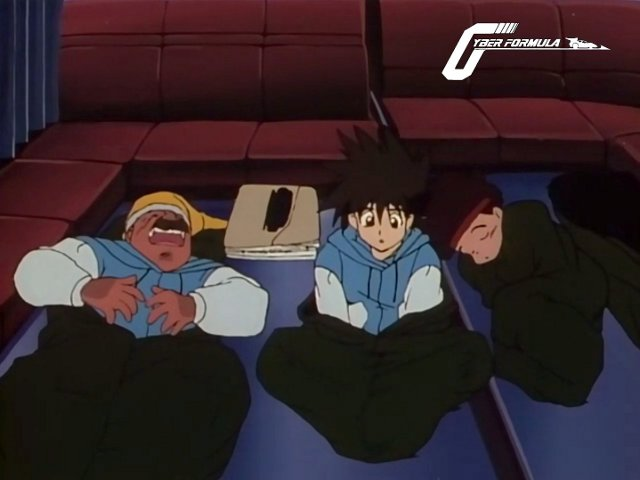

Bienvenue sur le site de la Nobluesky Fansub!
Annonces
Future GPX Cyber Formula 08 vostfr

Salut tout le monde!
Après avoir bien mangé pendant les fêtes (du moins j'espère pour vous que c'était pas des marrons bien lourds!), quoi de mieux que de rester regarder des animés au fond du canapé?
Voici un nouvel épisode de votre série préférée, le premier en cette année 2015.
Nous arrivons au dénouement de la finale du Grand Prix du Japon. Hayato a fort à faire avec les éléments et les autres pilotes....
Future GPX Cyber Formula 07 vostfr

Eh oui, je suis encore là! Après presque trois mois sans une sortie, voici enfin cet épisode 7, histoire de vous souhaiter un Joyeux Noël!
Je suis désolé de n'avoir pu vous offrir un épisode par semaine, mais c'est ainsi, la vie ne permet pas toujours de faire ce que l'on a prévu. Alors j'ai pris une décision, j'espère que vous ne me massacrerez pas à coups d'onigris m'en voudrez pas : les épisodes sortiront...
Future GPX Cyber Formula 06 vostfr

Bonjour à tous,
Cette semaine il fait plutôt frisquet, et ce beau mois de Septembre nous laissait espérer un été indien un peu plus long.
Pas grave, les couche-tards auront leur dose d'animé pour ce soir, bien au chaud sous la couette!
J'ai un peu traîné avant l'upload, mais voici enfin votre dose de Cyber Formule!
Hayato s'entraîne pour le Grand Prix du Japon. Mais il n'est pas seul sur le circuit d'Hokkaido, et il y fera des rencontres innatendues. Et se préparer pour un Grand Prix, ça donne des insomnies parfois...
Future GPX Cyber Formula 05 vostfr

Bonjour!
Voici l'épisode 5 de Future GPX Cyber Formula.
Notre équipe préférée s'en va vers le Grand Prix National. Mais la route leur réserve quelques surprises...
Bon épisode et à la prochaine!
Future GPX Cyber Formula 04 vostfr

Salut à tous!
J'espère que la rentrée s'est bien passée pour vous si vous étudiez encore comme moi, sinon je vous souhaite de bien débuter l'année au boulot, c'est la moindre des choses.
Trève de parlotte, ce que vous souhaitez n'est pas de parler travail mais de vous changer les idées non?!
Sinon vous ne seriez pas là, à venir dans l'antre de Nobluesky!!
Voici donc la suite de la course de Fujioka : c'est la course finale, qui fait suite au contre-la-montre miraculeusement réussi par Hayato. Mais la nature de cette course est différente...